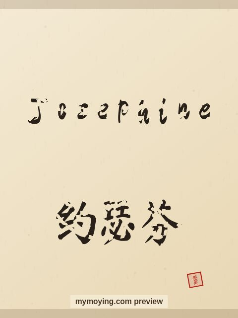

Josephine in Chinese Calligraphy
Curious how Josephine looks in Chinese brush calligraphy? This page shows the name, its Chinese transliteration 约瑟芬 (Yuē sè fēn), and the story behind it.

Sample. “Josephine” in the Regular (楷书) brush style with the Chinese name 约瑟芬 (Yuē sè fēn). The paid file removes the watermark.
The Chinese characters for Josephine
As a transliteration, Josephine is usually written 约瑟芬 (Yuē sè fēn). Each character is listed below with its own dictionary meaning — the name is chosen by sound, not by meaning, and Moying does not translate names. Please have a person review the characters before any permanent use such as a tattoo.
Origin and meaning
With French origins, Josephine is usually read as “God will add (feminine of Joseph)”.
About the name Josephine
Josephine Baker, the dancer and French Resistance agent, bore this name.
As a gift or a tattoo
The name Josephine suits a framed gift, and the clean high-resolution file also works as a tattoo design.
Open Josephine in the generatorFree watermarked preview. $1.99 once for a clean high-resolution download of this name in every style and setting. No subscription. Digital product, delivered instantly; see Terms.